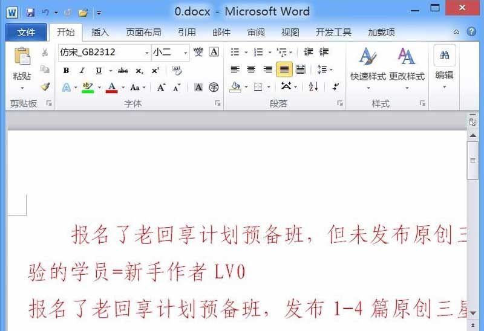

Word文档的操作过程
一、兑奖票导出操作
本流程中涉及到出票截止时间的一律使用兑奖当天14点00分，每日兑奖时间为15点以后，目前彩种行为：山东11选5，竞彩足球，共两种；
1、登录“彩票后台”，依次点击“竞彩数据”——“竞彩手动开奖”，会自动打开一个新页面，新页面会提示成功字样即可，具体操作如下图：
2、登录“彩票后台”，依次点击“方案列表”——“合作方投注列表”，按照“彩种”“出票截止时间”“中奖”“兑奖”等判断条件进行筛选后记录中奖金额及中奖票张数，具体操作如下图：
3、登录“彩票后台”，依次点击“数据服务”——“方案导出”，按照“彩种”“出票截止时间”“中奖”“兑奖”等判断条件进行筛选后依次点击“确定”——“导出”完成中奖票到处工作，具体操作如下图：
二、兑奖票打印及兑奖操作
1、将导出的中奖票放置至中奖票打印电脑的D盘，且以source.txt来命名，如下图：
2、在桌面双击打开“myeclipse.exe”，大概20秒看到如图界面，点“OK”，开始进度条，进度条走完后进入软件，具体操作如下图：

3、在红色大框内空白处右键选择“Run As”,选择“JUnit Test”，完成后开始打印中奖票，具体操作如下图：
4、将打印完的兑奖票在前台彩票机器上兑奖，兑奖完成后核对兑奖的金额及张数与后台是否一致并将结果记录至《出票统计表2019》；
5、发送兑奖金额图片和转对公户的额度转账小票图片至出票值班群，具体图片如下：
6、登录“彩票后台”，依次点击“方案列表”——“合作方投注列表”，按照“出票截止时间”“中奖”“兑奖”等判断条件进行筛选，将筛选后的票先核对一下与兑奖的票张数及金额是否正确后，将页面下拉至底部，点击“设置为已兑奖“，次流程操作完毕，具体操作如下图：